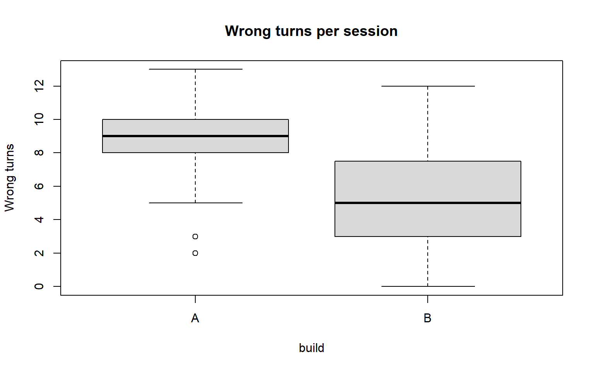
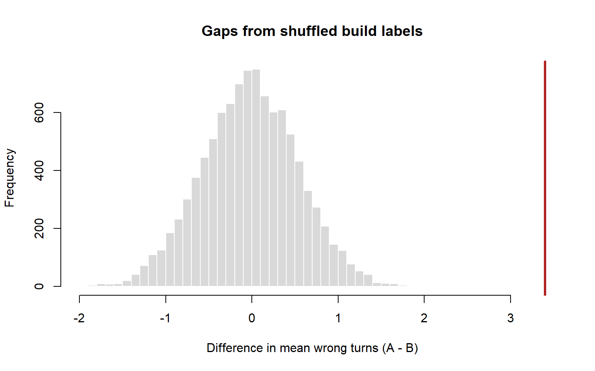
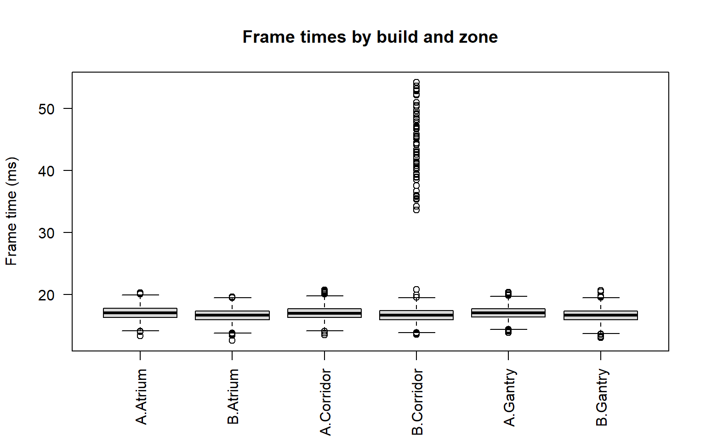

Build B added lighting and signage to guide players through Tidebreak. This lab asks the question the team built it to answer:
Does improved environmental guidance help players navigate the level?
Part A takes the raw export the team received and gets it into a shape that can answer that question, keeping a written record of every decision. Part B puts a size, an interval and a p-value on the differences, and asks the question no function answers: does this difference matter? By the end you will have answered the Stage 2 question, did the change work?, and written the recommendation.
Function
What it does
distinct()
Drop rows that repeat an earlier row exactly
is.na()
Find missing values
trimws(), tolower()
Make text labels consistent
\|>
Pass the result on its left into the function on its right
filter(), select(), mutate(), arrange()
Keep rows, keep columns, change a column, sort
count(), group_by(), summarise()
Counts, and one row of summaries per group
t.test()
Independent-samples and paired t-tests, with confidence intervals
Learning outcomes
By the end of this lab you can:
find duplicates, gaps and inconsistent labels in a raw export, and fix them in one readable pipeline;
write a cleaning log that records every row dropped, why, and what it did to n;
explain a p-value by reading a shuffle of the build labels;
run an independent-samples and a paired t-test, and pull the estimate, interval and p-value out of the result;
tell “no meaningful difference” apart from “cannot tell” using a confidence interval;
decide whether a statistically significant difference justifies a design change, and write the recommendation.
Ground rules
Clean before you describe. Every change you make to the data goes in your cleaning log, including changes that remove no rows.
Look at the plot before running the test. Every Part B exercise assumes you have looked at the data first.
Type the code. Open the solution after your attempt, even when your attempt worked.
Every exercise ends with a short written answer. Write it. The Challenge is judged on the writing, not the code.
When you report a difference, give its size and its interval, not only the p-value.
raw is the export as delivered, and Part A cleans it. trim_ws = FALSE stops read_csv() quietly stripping spaces from text values, so you see the file the way Excel or a database import would. sessions has one row per player per session, with each player on one build only. paired is a separate study in which every player played both builds.
raw is the export the team actually received. Every problem in it is silent: nothing throws an error, and every problem changes an answer. Part A finds them, fixes them, and ends with the cleaning log that goes in your report.
Exercise 01 — Rows exported twice [Do]
How many rows of raw are exact copies of an earlier row? Then list any session_id that appears more than once.
distinct() drops exact repeats, so the difference in rows is the number of copies. Counting session_id and keeping counts above 1 finds every key that appears twice.
Write 2 sentences: the number of repeated keys equals the number of exact copies. What would it mean if there were more repeated keys, and why could you not simply delete the extra rows?
Exercise 02 — Where the gaps are [Do]
Count the missing values in every column of raw at once.
is.na() on a data frame gives a TRUE/FALSE table the same shape as the data, and colSums() counts the TRUEs in each column.
Write 1 sentence: which column’s gaps would you investigate first, and why that one?
Exercise 03 — Clean it in one pipeline [Apply]
Build clean from raw in one pipeline: drop the duplicated rows, then fix cohort so that it has exactly three values. Count cohort before and after to prove the fix worked, and note the number of rows.
clean <- raw |>distinct() |>mutate(cohort =tolower(trimws(cohort)))clean |>count(cohort)
# A tibble: 3 × 2
cohort n
<chr> <int>
1 novice 33
2 regular 53
3 veteran 34
nrow(clean)
[1] 120
trimws() removes the stray spaces and tolower() the inconsistent capitals. Counting before and after is the only proof that the fix caught every variant.
Write 2 sentences: the relabelling removed no rows. Why does it still belong in the cleaning log?
Exercise 04 — Who is missing? [Apply]
List every row of clean with a blank session_minutesor a blank deaths. Keep only session_id, build, quit_reason, session_minutes and deaths, and sort by build then quit_reason.
# A tibble: 11 × 5
session_id build quit_reason session_minutes deaths
<chr> <chr> <chr> <dbl> <dbl>
1 S025 A Completed test 30.2 NA
2 S077 A Completed test 26.3 NA
3 S001 A Frustrated NA 4
4 S007 A Frustrated NA 4
5 S009 A Frustrated NA 3
6 S019 A Frustrated NA 4
7 S049 A Frustrated NA 1
8 S053 A Frustrated NA 1
9 S073 A Frustrated NA 3
10 S119 A Frustrated NA 2
11 S022 B Lost interest 11.9 NA
| means “or”, so a row is kept if either value is missing. Sorting puts rows with the same build and outcome next to each other, which is what makes the pattern visible.
Write 2 sentences: describe the pattern in the blank session_minutes rows, and say how it differs from the pattern in the blank deaths rows.
NoteShow answer
All 8 blank session lengths are Build A frustration quits. The 3 blank death counts are spread across 2 builds and 2 different outcomes. One set looks like something in the game failed to log; the other looks like noise.
Exercise 05 — Write the cleaning log [Decide]
Decide what to do with the rows that have gaps, then write the cleaning log for clean: every step, the number of rows after it, and why. Your log is the record a reader of the report would use to check your n (rule 6).
Before you decide, compare each build’s median session_minutes with the blanks left out, against the median of the Build A frustration quits that were recorded.
# A tibble: 1 × 2
recorded median_minutes
<int> <dbl>
1 12 11.2
sum(complete.cases(clean)) # what "drop every incomplete row" would leave
[1] 109
One defensible answer: keep every row, and handle the gaps per analysis.
Step
Rows after
Why
Raw export
124
As delivered
Remove exact duplicates
120
4 sessions exported twice; no key duplicates with different values
Standardise cohort
120
18 labels had stray spaces or inconsistent capitals
Keep blank session_minutes
120
All 8 are Build A frustration quits. Summaries of session length exclude them and say so
Keep blank deaths
120
3 rows, no pattern. Excluded from deaths summaries only
What makes it defensible. The blank session lengths are not random. Recorded Build A frustration quits have a median of 11.2 minutes, so the missing ones are almost certainly short, and Build A’s median of 26.1 minutes is an overestimate. Keeping the rows keeps their quit_reason, which is complete and carries the finding. The log says what every summary of session length is missing, so a reader can judge it.
What would make it indefensible. Dropping every incomplete row by reflex, which silently takes n from 120 to 109 and removes the frustration quits the comparison is about. Or filling the blanks with 0 or with Build A’s average, which invents session lengths and hides the logging fault.
Write 3 sentences: the blank session lengths are also a bug in Build A’s telemetry. Who should hear about it, and what goes in the bug report?
ImportantBefore Part B
Part B uses sessions from the Setup block, not your clean. It is the same sessions, exported again after the logging fault was fixed: the same rows, with the gaps you found filled.
identical(clean$session_id, sessions$session_id)
[1] TRUE
sum(is.na(sessions$session_minutes))
[1] 0
sum(is.na(sessions$deaths))
[1] 0
Everything Part B compares is therefore free of the bias you found in Exercise 05. In a real playtest you would rarely get that second export. Your cleaning log is what you would have instead.
Part B — Is the difference real, and does it matter?
Notes for this part: From Sample to Population and Comparing Groups. Report every comparison by answering the six questions from Comparing Groups, in order: what happened, how large, how uncertain, could it be chance, does it matter, what should the team do.
Exercise 06 — Describe before you test [Do]
Produce one row per build with the number of sessions and the mean, median, standard deviation and IQR of wrong_turns. Then draw side-by-side boxplots.
# A tibble: 2 × 6
build n mean median sd iqr
<chr> <int> <dbl> <dbl> <dbl> <dbl>
1 A 60 8.92 9 2.37 2
2 B 60 5.52 5 2.70 4.25
boxplot(wrong_turns ~ build, data = sessions, col ="grey85",main ="Wrong turns per session", ylab ="Wrong turns")

n() counts the rows in each group. Always report it: a difference means little without the number of players behind it.
Write 1 sentence: Build B’s standard deviation is larger than Build A’s. What does that mean for a player?
Exercise 07 — The independent-samples t-test [Do]
Run the t-test comparing wrong_turns between builds. Store the result, then pull out the two means, the confidence interval and the p-value separately.
NoteShow solution
result <-t.test(wrong_turns ~ build, data = sessions)result
Welch Two Sample t-test
data: wrong_turns by build
t = 7.3208, df = 116.07, p-value = 3.492e-11
alternative hypothesis: true difference in means between group A and group B is not equal to 0
95 percent confidence interval:
2.480141 4.319859
sample estimates:
mean in group A mean in group B
8.916667 5.516667
Each player played one build only, so this is the independent-samples test. Pulling out the parts with $ is how you get the numbers into a sentence with inline R rather than by copying.
Write 2 sentences: is the confidence interval for Build A minus Build B, or Build B minus Build A? How can you tell from the output?
Exercise 08 — Could it be chance? Read the shuffle [Do]
If the signposting made no difference, the build label on each session would be arbitrary. This code shuffles the labels 10,000 times, recomputes the gap in mean wrong turns each time, and counts how many shuffled gaps are at least as large as the real one. You do not need to be able to write it. Run it, and compare the result with Exercise 07’s p-value.
mean(abs(shuffled) >=abs(observed)) # the shuffle's p-value
[1] 0
hist(shuffled, breaks =40, col ="grey85", border ="white",xlim =range(c(shuffled, observed)),main ="Gaps from shuffled build labels",xlab ="Difference in mean wrong turns (A - B)")abline(v = observed, col ="firebrick", lwd =3)

NoteShow solution
The real gap is 3.4 wrong turns; the largest of ten thousand shuffled gaps is 2.17. No shuffle came close, so the shuffle’s p-value is below 1 in 10,000, which agrees with the t-test’s tiny p-value. The shuffle shows what a p-value is: the share of a world without a difference that looks at least as extreme as your data.
Write 2 sentences: what does one shuffle represent, and why does the proportion of extreme shuffles answer “could this be chance?”
Exercise 09 — The same players, both builds [Apply]
paired records 30 players who each played both builds. Run the paired t-test on wrong_turns_a and wrong_turns_b, then run the unpaired test on the same two columns. Compare the widths of the two confidence intervals.
Same estimate, but the paired interval is 1.9 wrong turns wide against 3.2. The paired test compares each player with themselves, so differences in player skill cancel out. diff() of an interval is its width.
Write 2 sentences: the paired file does not record which build each player played first. Why does that matter, and what would you change about the next paired study?
Exercise 10 — No difference, or cannot tell? [Apply]
Run the t-test on enjoyment by build and on items_collected by build. Neither is significant. For which one can you say there is no meaningful difference, and for which can you only say we cannot tell?
NoteShow solution
enjoy <-t.test(enjoyment ~ build, data = sessions)items <-t.test(items_collected ~ build, data = sessions)enjoy$conf.int
Read each interval against the size of the variable. Enjoyment’s interval runs from -0.35 to 0.35 on a seven-point scale: whatever the true difference is, it is too small to matter. That is no meaningful difference. The items interval runs from -1.01 to 0.34 items, when a typical player collects about 4. Build B’s players could be collecting up to 1.0 more items each, or up to 0.3 fewer. That is cannot tell.
“Cannot tell” means this playtest was too small to see a difference of that size. A bigger playtest, or a paired one, would narrow the interval enough to decide (Testing in Depth).
Write 2 sentences: why is “not significant” a weaker statement than “the confidence interval is narrow and sits around zero”?
Exercise 11 — “Players play longer in Build B” [Decide]
t.test(session_minutes ~ build) gives p = 0.037, and Build B’s sessions are about 3 minutes longer on average. The producer wants to put “players play 3 minutes longer in Build B” in the pitch. Do you let them? Test before you decide: compare session length between the builds for players who did not quit in frustration.
NoteShow solution
not_frustrated <- sessions |>filter(quit_reason !="Frustrated")t.test(session_minutes ~ build, data = not_frustrated)
Welch Two Sample t-test
data: session_minutes by build
t = 0.63783, df = 88.126, p-value = 0.5252
alternative hypothesis: true difference in means between group A and group B is not equal to 0
95 percent confidence interval:
-1.564143 3.042780
sample estimates:
mean in group A mean in group B
26.19750 25.45818
# A tibble: 2 × 3
build n median_minutes
<chr> <int> <dbl>
1 A 20 11.7
2 B 5 11.7
One defensible answer: no, because the claim describes the wrong thing. Among players who did not quit in frustration, Build A averaged 26.2 minutes and Build B 25.5 (p = 0.53). Frustration quits end at a median of about 11.7 minutes in both builds. Build B does not make anyone play longer. It makes fewer people quit early, and that pulls its average up. The honest pitch line is “fewer players quit in frustration”, which is also the stronger claim.
What makes it defensible. It checks what is driving the difference before describing it, and it replaces the claim with one the data supports.
What would make it indefensible. Approving the line because the p-value is below 0.05. The difference is real; the explanation attached to it is not.
Write 3 sentences: a significant difference in a mean can come from every player shifting a little or from a few players shifting a lot. How do you tell which, and why does it change the design conclusion?
Exercise 12 — Which number goes in the report? [Decide]
You have three estimates of how much the signposting reduced wrong turns: the session-level test from Exercise 07, the paired study from Exercise 09, and a player-level test that averages each player’s 4 sessions first. Run the player-level test, then decide which result leads the report.
One defensible answer: lead with the player-level result, and cite the paired study as support. The session-level test treats 120 sessions as independent when they come from 30 players, so its interval is narrower than the data justifies. The player-level interval, 2.4 to 4.4 wrong turns, is honest about that. The paired study, a different design with different players, points the same way, which is worth more than any single p-value.
What makes it defensible. It picks the analysis whose assumptions match how the data was collected, and it uses the other two as corroboration rather than choosing between them.
What would make it indefensible. Picking whichever result has the smallest p-value or the largest effect. That is choosing the answer, not the analysis.
Write 2 sentences: why is agreement between two differently designed studies stronger evidence than a very small p-value from one?
Challenge — Build B was meant to be an improvement. Was it? [Decide]
The producer asks one question before approving Build B for the next milestone: was it an improvement?
Build the evidence you would take into that meeting. Use more than one measure: navigation, whether players stayed and finished, whether anything got worse, and performance. frames is loaded in the Setup block. For each measure, keep the evidence separate: what the plot shows, what the summaries say, what the test says, and whether the difference is big enough to matter.
NoteShow solution
# 1. Navigation: the question Build B was built to answert.test(wrong_turns ~ build, data = sessions)
Welch Two Sample t-test
data: wrong_turns by build
t = 7.3208, df = 116.07, p-value = 3.492e-11
alternative hypothesis: true difference in means between group A and group B is not equal to 0
95 percent confidence interval:
2.480141 4.319859
sample estimates:
mean in group A mean in group B
8.916667 5.516667
# 2. Did players stay and finish? Rates per build, then a test for eachoutcomes <- sessions |>group_by(build) |>summarise(n =n(),frustrated =sum(quit_reason =="Frustrated"),completed =sum(completed))outcomes
# A tibble: 2 × 4
build n frustrated completed
<chr> <int> <int> <int>
1 A 60 20 32
2 B 60 5 53
prop.test(outcomes$frustrated, outcomes$n)
2-sample test for equality of proportions with continuity correction
data: outcomes$frustrated out of outcomes$n
X-squared = 9.9032, df = 1, p-value = 0.00165
alternative hypothesis: two.sided
95 percent confidence interval:
0.09506413 0.40493587
sample estimates:
prop 1 prop 2
0.33333333 0.08333333
prop.test(outcomes$completed, outcomes$n)
2-sample test for equality of proportions with continuity correction
data: outcomes$completed out of outcomes$n
X-squared = 16.134, df = 1, p-value = 5.9e-05
alternative hypothesis: two.sided
95 percent confidence interval:
-0.5167766 -0.1832234
sample estimates:
prop 1 prop 2
0.5333333 0.8833333
# 3. Did anything get worse?t.test(enjoyment ~ build, data = sessions)
Welch Two Sample t-test
data: enjoyment by build
t = 0, df = 113.42, p-value = 1
alternative hypothesis: true difference in means between group A and group B is not equal to 0
95 percent confidence interval:
-0.3483742 0.3483742
sample estimates:
mean in group A mean in group B
3.933333 3.933333
t.test(score ~ build, data = sessions)
Welch Two Sample t-test
data: score by build
t = 0.22558, df = 117.76, p-value = 0.8219
alternative hypothesis: true difference in means between group A and group B is not equal to 0
95 percent confidence interval:
-102.6797 129.0797
sample estimates:
mean in group A mean in group B
1435.367 1422.167
# A tibble: 2 × 3
build fps p99
<chr> <dbl> <dbl>
1 A 58.8 19.5
2 B 59.0 39.4
boxplot(ms ~ build + zone, data = frames, col ="grey85", las =2,main ="Frame times by build and zone", ylab ="Frame time (ms)", xlab ="")

Measure
Descriptive
Statistical
Practical
Wrong turns
Mean 8.9 in A, 5.5 in B
95% CI 2.5 to 4.3 fewer, p < 0.001
Large: players get lost far less
Frustration quits
20 in A, 5 in B
prop.test(): p = 0
Large: the main way Build A lost players
Completed the test
53% in A, 88% in B
prop.test(): p < 0.001
Large
Enjoyment
Means 3.9 and 3.9
95% CI -0.35 to 0.35, p = 1
No cost to enjoyment
Score
Means 1435 and 1422
p = 0.82
No change
Frame time
Both about 59 FPS; 99th percentile 19.5 ms in A, 39.4 ms in B
Not a comparison of means
Every one of the 60 frames slower than 30 FPS is Build B, in the Corridor
The headline, in the six steps.
What happened? Build B’s players took fewer wrong turns, fewer quit in frustration, and more finished.
How large? 3.4 fewer wrong turns per session; 20 frustration quits against 5.
How uncertain? The wrong-turns interval runs from 2.5 to 4.3 fewer.
Could it be chance? Not plausibly: p < 0.001, and the same for frustration and completion.
Does it matter? Yes. Even the smallest plausible reduction is noticeable, and none of it cost enjoyment or score. But the frame-time plot shows a hitch in Build B’s Corridor that the average frame rate cannot see.
What should the team do? Keep the signposting; fix the Corridor hitch before Build B goes forward.
What would make it indefensible. Answering from wrong turns alone, because that is the measure the build was designed to move. Or quoting average FPS as proof that performance was unchanged. Both answers are supported by a real number, and both miss what a player would actually experience.
Write 4 sentences, using What → Pattern → Meaning → Action:
What did you measure?
Pattern: what does the evidence show, across more than one measure? Give the size and the interval for the main one.
Meaning: what does that mean for the player?
Action: what exactly do you recommend to the producer?
Extension — Bring the survey in [Apply]
For anyone who finishes the Challenge with time to spare. It uses one new function, left_join(), which you will meet properly in Stage 4.
The survey does not record the build. Load data/tidebreak_survey.csv, then use left_join() to add each session’s build to it, matching on session_id. Then compare the share of responses in each build that disagreed (1 or 2) with “I always knew what my objective was”, using prop.test().
disagreed <- joined |>group_by(build) |>summarise(disagreed =sum(objective_clear <=2), n =n())disagreed
# A tibble: 2 × 3
build disagreed n
<chr> <int> <int>
1 A 37 60
2 B 18 60
prop.test(disagreed$disagreed, disagreed$n)
2-sample test for equality of proportions with continuity correction
data: disagreed$disagreed out of disagreed$n
X-squared = 10.876, df = 1, p-value = 0.0009744
alternative hypothesis: two.sided
95 percent confidence interval:
0.1309446 0.5023888
sample estimates:
prop 1 prop 2
0.6166667 0.3000000
left_join() keeps every survey row and adds build from the matching session; checking that the row count is unchanged and that no build is NA confirms every survey found its session. 37 of 60 Build A responses disagreed, against 18 of 60 in Build B (p < 0.001).
Write 2 sentences: the telemetry says Build B players took fewer wrong turns; what does this survey result add, and what kind of evidence is it?
Appendix — Reading t.test() output
NoteShow the annotated output
t.test(wrong_turns ~ build, data = sessions)
Welch Two Sample t-test
data: wrong_turns by build
t = 7.3208, df = 116.07, p-value = 3.492e-11
alternative hypothesis: true difference in means between group A and group B is not equal to 0
95 percent confidence interval:
2.480141 4.319859
sample estimates:
mean in group A mean in group B
8.916667 5.516667
Line
What it tells you
Welch Two Sample t-test
The independent-samples test, not assuming equal spreads. The right default
t = ..., df = ...
The test statistic and its degrees of freedom. Report them if asked; do not interpret them
p-value = ...
How surprising the data would be if the builds did not differ. e-11 means “times 10 to the minus 11”: tiny
alternative hypothesis: ...
Names the direction: the difference is group A minus group B
95 percent confidence interval
The plausible range for the difference, A minus B
sample estimates
The two group means
Appendix — Common errors
WarningShow the error guide
Message
What it usually means
grouping factor must have exactly 2 levels
t.test(y ~ group) needs exactly two groups. Filter to two first
not enough 'x' observations
A group is empty, usually a misspelled level such as "a" for "A"
could not find function "filter" (or distinct, count)
You have not run library(dplyr)
'x' and 'n' must have the same length
prop.test() needs one count and one total per group, in the same order
object 'clean' not found
You skipped Exercise 03, or ran Part A out of order